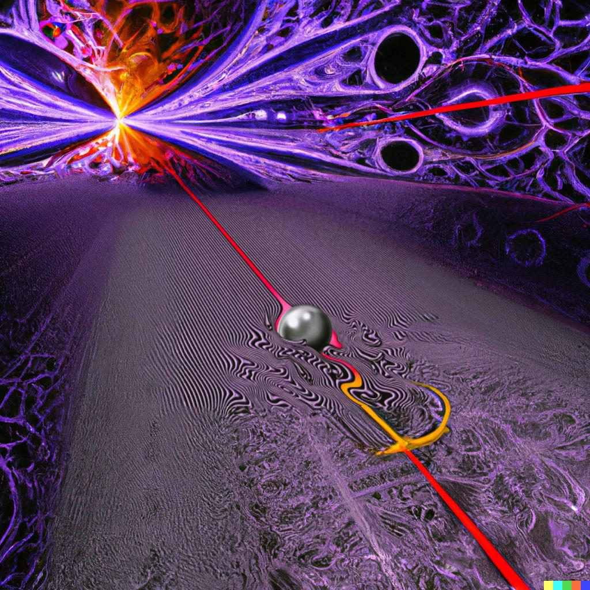
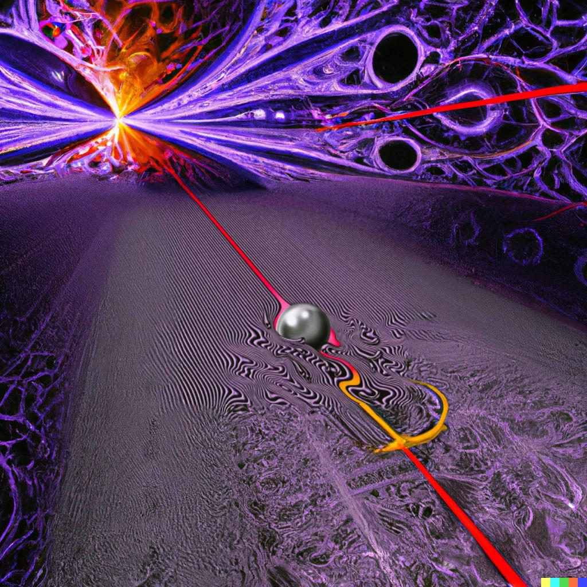

The Slow Rush
Released February 2020
Personnel:
- Kevin Parker - Songwriter, performance, production, mixing, art concepts
- Greg Calbi, Steve Fallone, Glen Goatze - Technical
- Neil Krug - Artwork
The Slow Rush is the fourth studio album by Australian musical project Tame Impala, released on 14 February 2020. It follows the 2015 album Currents and the 2019 singles ”Patience” and ”Borderline”, with the latter serving as the first single from the album. Rooted in psychedelic music, the album was positively received by critics and reached the top 10 on many record charts around the world, debuting atop the charts in three countries and as well as on the US Alternative and Rock charts.
At the 2020 ARIA Music Awards, the album won five categories, ARIA Award for Album of the year, Best Group, Best Rock Album, Engineer of the Year and Producer of the Year (the latter two for work by Parker). The album also received a nomination for Best Alternative Music Album at the 63rd Annual Grammy Awards, whilst ”Lost In Yesterday” was nominated for Best Rock Song.
Side One
- One More Year
- Instant Destiny
- Borderline
- Posthumous Forgiveness
- Breathe Deeper
- Tomorrow's Dust
Side Two
- On Track
- Lost in Yesterday
- Is It True
- It Might Be Time
- Glimmer
- One More Hour
- On the US Billboard 2020, The Slow Rush debuted at number three, moving 110,000 equivalent album sales.
- In October 2021, the band announced a deluxe box set edition would be released in February 2022, comprising B-sides and remixes of the album. This version features remixes from Four Tet and Blood Orange, among others, and a guest appearance from rapper Lil Yachty.
- Kevin Parker, producer
- All tracks are written by Kevin Parker.
 
